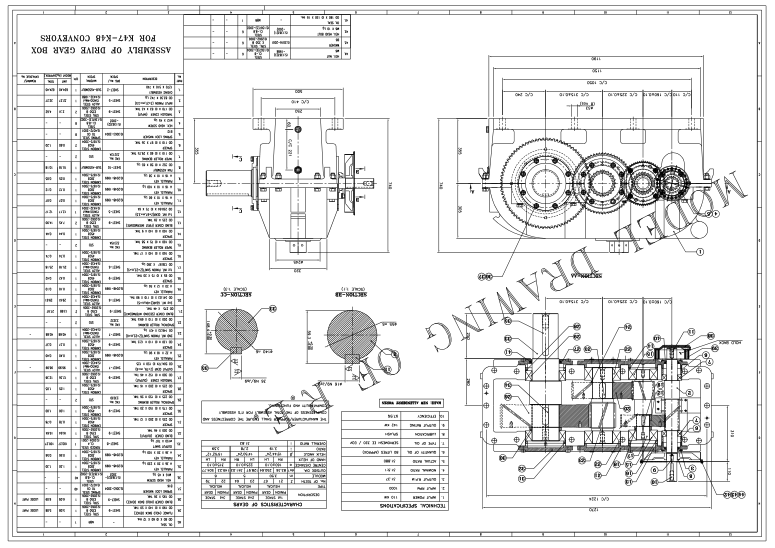
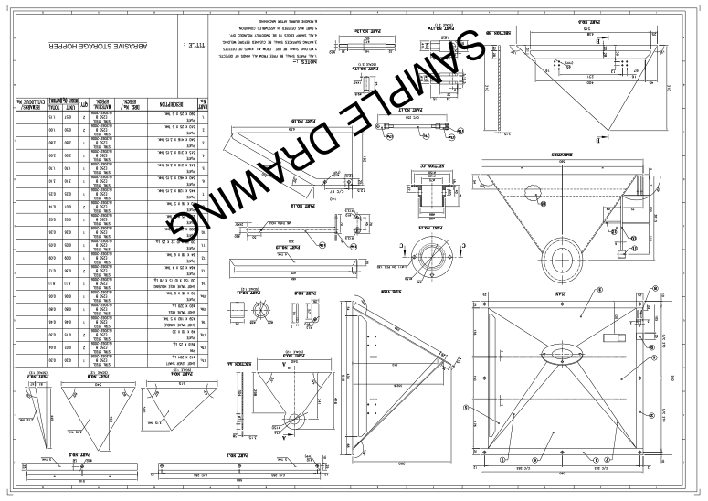
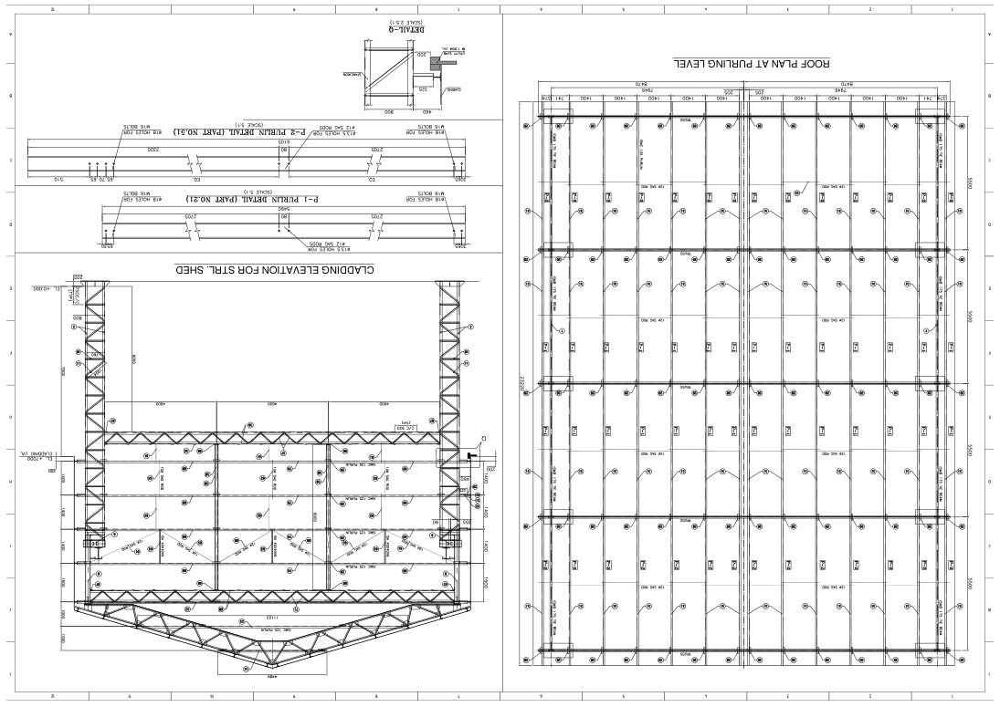

Reverse engineering
Turn existing components and legacy drawings into editable engineering deliverables.
Mechanical, piping and structural design. Detailed drawings and 3D models that turn complex requirements into fabrication-ready documentation.

Based in Visakhapatnam, we provide multi-disciplinary design and detail engineering for industrial plants, manufacturing and infrastructure.
From reverse engineering existing components to developing structural and piping drawings, our work connects technical requirements with clear, production-ready deliverables.
Get to know usTurn existing components and legacy drawings into editable engineering deliverables.
Develop plant piping layouts and detailed fabrication documentation.
Create steel structure drawings for fabrication and erection.
Translate engineering inputs into parametric models and production drawings.
Coordinate equipment, components and structures in clear assembly layouts.
Develop raw engineering inputs into detailed models and documentation.
Engineering documentation aligned with your project requirements.
Mechanical, piping and structural expertise across industrial applications.
Manufacturing and assembly drawings prepared to ISO, BIS and client-specific requirements.
Creo, AutoCAD, Tekla Structures, ARES Commander and STAAD.Pro.
Assembly and sectional views for a conveyor drive gearbox.

Fabrication details, sectional views and a material schedule.

Roof plan at purlin level and structural shed cladding elevation.
Talk to us about your drawings, components or next project.